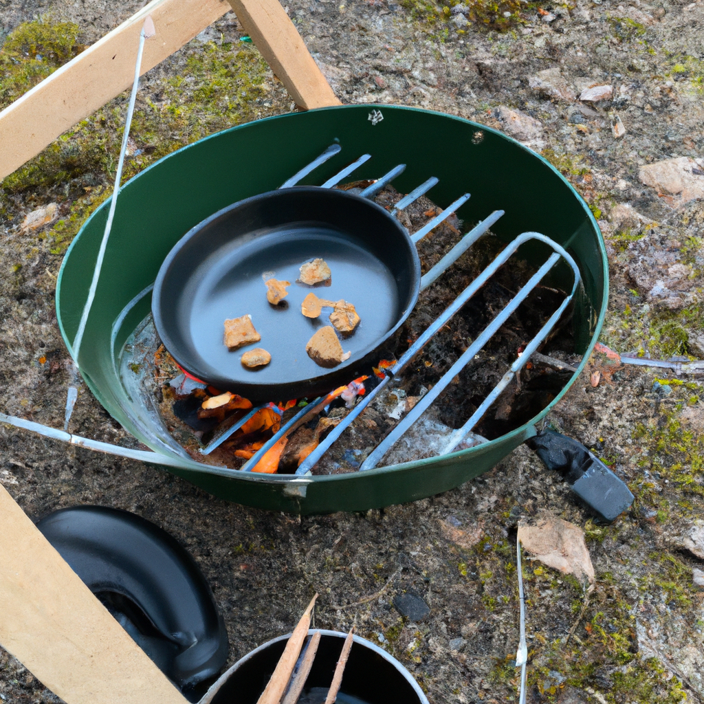

how I game without anyone knowing and great cooking
When I知 not at work at Aries, I like to express my alter ego through gaming and cooking. I game without anyone knowing because I'm a bit of a secret gamer. I love to play the latest first-person shooters and MMORPGs, but I don't want to broadcast it to the world. I have a few friends who also game, and we share tips and tricks to get ahead in our favorite games. I also like to test my skills against online opponents in tournaments and competitions.
Cooking is my other passion and I知 always trying out new recipes. I try to find recipes that are relatively easy to make, but still taste great. I experiment with different flavors and ingredients, and I'm always happy to share the results with friends. I also like to challenge myself to create dishes that have a unique twist. I知 always looking for new recipes to try out and I知 always happy to share the results with everyone.
Cooking and gaming are two of my favorite hobbies and I love to combine them. I値l sometimes host gaming nights at my house where I serve up some of my favorite dishes. We all have a great time playing games and eating delicious food. I also like to compete in gaming tournaments and if I win, I値l cook up a special meal to celebrate.
Gaming and cooking are two activities that I'm passionate about, and I'm always looking for ways to combine them. Whether I'm hosting a gaming night with friends or competing in tournaments, I'm always looking for new recipes and techniques to make the experience even better.